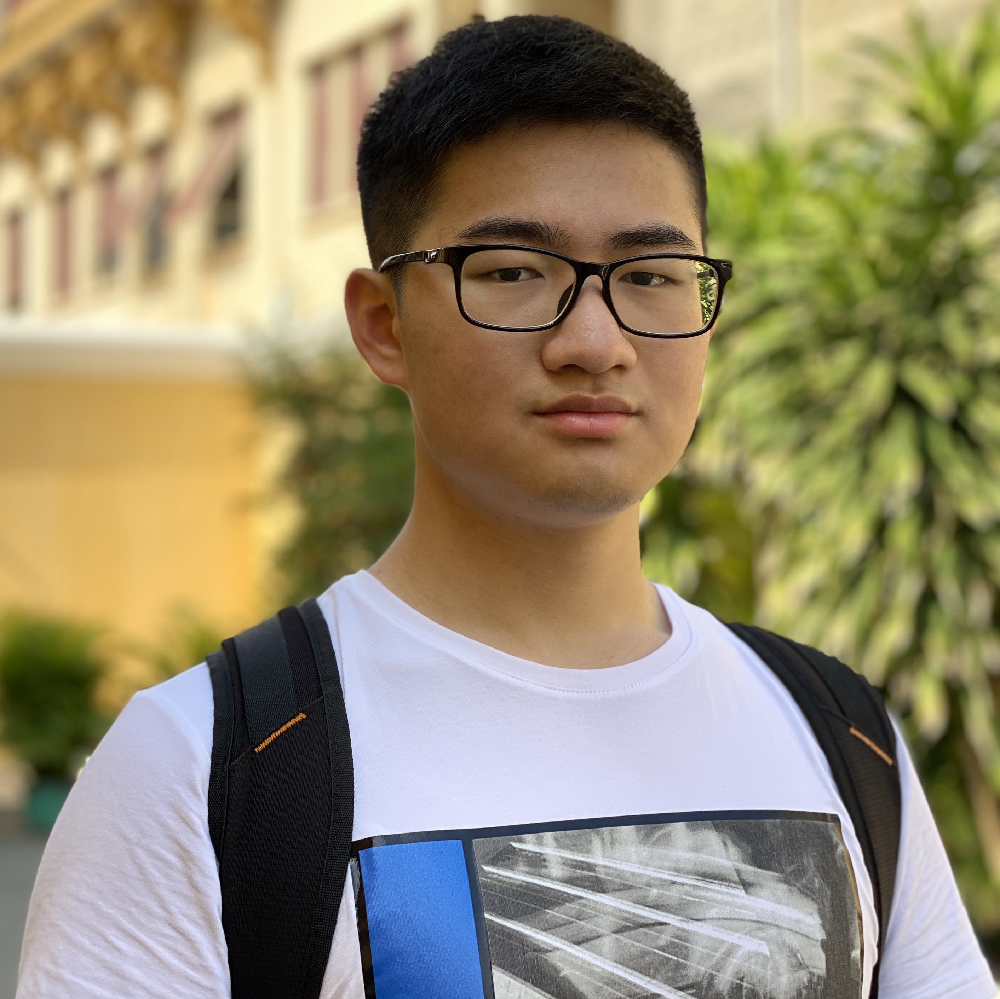

Team Name
TUE #14 - The Back Table
Introduction
Welcome to The Back Table's wonderful website. Hope is all well and we hope you enjoy our website. The team,
Sanchit, Clinton, Pratham, Daniel, Vivek, Jack and Navdeep have done their best to comeplete this website to
the best of their abiltities. This website includes: Team Profile(introduction to every group member and a
little insight about iur team's life), project plan, skills and jobs, detailed description about our project
and group reflection.
Group Process
In assignment two “THE Back Table” performed extremely well in teamwork and never lacked in helping other
members out when they needed some assistance. The group also split up work evenly so one person did not have
to contribute to doing majority of the work all by themselves. Overall, as this was the first assignment for
this course for all the members, everyone performed extremely well. As for making any changes within the
group, members have decided to participate and put a greater effort within the team meetings, so we do not
have to call every few times a week but rather do it occasionally with greater effort.
Carrer Plans
Let’s commence this by talking about the Job Titles which our group members in future want to be a part of,
which include: cyber security, app developer, full stack developer, mobile app developer, Senior Systems
Administrator, software engineer and senior cyber security officer. The Job Titles mentioned before would be
ranked quite high, as the demand for cyber security, according to Cybersecuirty Workforce Study 2021 from
industry group the International Information System Security Certification Consortium, it’s predicted that
jobs in 2023 are about to go up by 23%. Two of our group members would be enveloped in cybersecurity, as
Pratham and Jack both desired to work in that field in IT. Additionally, according to Australia’s
cybersecurity Future’s by Frank Smith, Aim Sinpeng, Ralph Holz, Sarah Logan, Jonathon Hutchinson and Hui Xue
suggests that jobs in cybersecurity between the years of 2023 and 2024 are expected to go up by 3%, and they
also say that it will most likely increase than decrease. Moving onto talking about software engineering, as
most of technology in this century and generation requires top tier software, as it is required to several
tasks on a daily basis. Software Engneering’s future demand, according to Job Outlook by the Australian
government, is described as “very strong”. According to the National Skills Commission Skills Priority List,
software engineering would be considered as in a “Strong” demand in Victoria and all around Australia.
Additionally, ‘Futures Platform’ suggests that software engineering jobs are expected to “grow at a rate of
24%” between the years of 2016 and 2026. Furthermore, jobs are expected to increase by 22% from 2020 to
2030.
Moving on, Sanchit is an individual who stands out from the group and has a very unique and specific Job
Title, which is to be a Senior Systems Administrator. According to Job Outlook by the Australian Government,
the “future growth” for a Systems Adminstrator’s job title is described as “strong”. Additionally, to
Pluralsight, by 2020, demand for network and computer systems administrators is predicted to increase by up
to 28%. Furthermore, if we search systems administrator as a job title on job seek, it showcases us 3453
total jobs all around australia, which is obsered.
Danieal and Vivek are individuals whose’s Job Titles are parallel to each other, which is being involved in
development of apps, which includes mobile and web. Applications are extremely necessary and are used very
often on a daily basis, hence their job demands will be strong and high in demand. According to
studyworkgrow, app developers are “higher than average demand in...Victoria and...”. Furthermore, ‘Mobile
App Daily’, “the demand for the number of developers is expected to increase from 17% to 24% by the year
2026”. Strolling through various websites and articles, it can be said that app developers are in reality
actually not that much in demand, as apps these days can be made on other platforms without the need to use
computer programming.
Lastly, Clinton is an individual who seems to be extremely interested in the Job Title ‘Full Stack
Developer’, which according to the U.S. Bureau of Labor Statistics is “one of the highest paying jobs
worldwide”. Furthermore, the U.S. Bureau of Labor Statistics, Full Stack Development positions are expected
to grow from 135,000 to over 853,000 by 2024, according to the US Bureau of Labor Statistics. Full-stack
development jobs are high-paying occupations that are accessible in big numbers. Additionally, burning glass
data suggest that there were 344 job postings, hence showcasing its job demand.
Clinton Thai

Student Number: S3840992
Email: S3840992@student.rmit.edu.au
Fun Fact: I play a lot of games, and have managed to reach a peak of top #2000 in Oceania
region for Valorant (Immortal 3)
About:
Another exciting member of “The Back Table” is Clinton whose student ID is s3840992, he was originally born
and raised in the Suburb of Mangere which is located in Auckland, New Zealand. Clinton interestingly also
has Vietnamese and Chinese blood flowing right through his veins and can speak English, Teochew and
Vietnamese. Clinton's interest in I.T comes from his uncle who introduced him to gaming at an early age and
from there on he had a great interest in I.T he was also known as the “I.T guy” in his family and friend
group. Clinton eventually decided to take Units 1-4 of Software Engineering, where he learnt how to code in
Java and followed the software engineering process to create his own basic software which wasn’t the best
but he learned a lot. In Clinton's spare time he likes to play CS: GO, Valorant, basketball and also likes
to workout.
Image Gallery Library: nanogallery2
Navdeep Singh

Student Number: s3944633
Email: s3944633@student.rmit.edu.au
Fun Fact: I am rerally good at boxing and kicking boxing, combat sport overall.
About:
Nav his student number is s3944633 and he was also born in India and came to Australia permanently in late
2015. He comes from northern India, from the state of Punjab. At home, the most spoken language is Punjabi
and English. His first hobby growing up was that he wanted to be a part of aviation, being a pilot in either
the air force or being a commercial pilot for any airline company. Nav also likes hitting up the gym,
playing lots of Basketball, performing Muay Thai and boxing. Nav also has past experience in I.T of HTML,
CSS and JavaScript and he learnt all these languages from his past elective classes in school.
Image Gallery Library: nanogallery2
Jiaqi Guan

s3815613: s3815613
Email: s3815613@student.rmit.edu.au
Fun Fact: Enjoy First person Shooting games
About:
Jiaqi Guan who you can also call Jack, his student id is s3815613. He is from the south of China, A city
called Guangzhou, It's one of the largest and oldest trading ports known in China. He can speak 3 languages
which are mandarin, Cantonese and English. When Jack has free time he enjoys playing video games the most,
especially FPS (first-person shooters) and hardcore games like "Escape from Tarkov". Jack also likes outdoor
activities like badminton and hiking. In past, jack has experienced internet hacking in high school and has
been interested in it ever since. Jack has also mastered the use of languages such as python, java and has
half a year of C++ experience.
Image Gallery Library: nanogallery2


{kind=link}
{kind=link}
{kind=link}
{kind=link}
{kind=link}
{kind=link}
{kind=link}
{kind=link}
{kind=link}
{kind=link}
{kind=link}
{kind=link}
{kind=link}
{kind=link}
{kind=link}